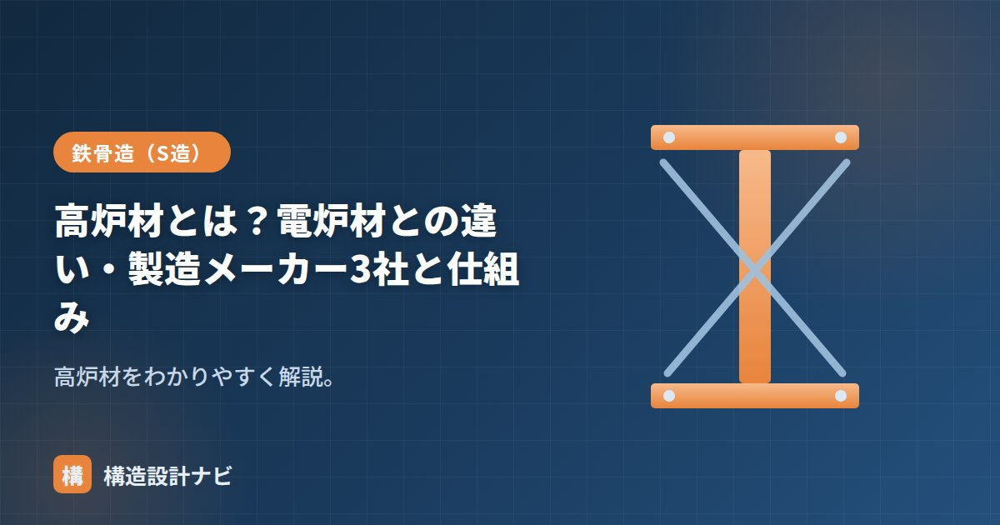

高炉材とは？電炉材との違い・製造メーカー3社と仕組み

高炉材とは、鉄鉱石を原料に高炉で鉄をつくる製鉄法（高炉法・銑鋼一貫製法）で生産された鋼材のことです。スクラップ（鉄くず）を電気で溶かす「電炉材」と対比され、原料の違いから品質の安定性や得意とする製品の範囲が異なります。鉄骨造で使う鋼材の供給を支える基本知識として押さえておきたい分類です。
- 高炉材は鉄鉱石から一貫製造され、品質が安定し厚板・高性能鋼に強い
- 電炉材はスクラップを電気炉で溶かす鋼材で、棒鋼・小径形鋼が得意
- 国内の高炉メーカーは日本製鉄・JFEスチール・神戸製鋼所の3社
高炉材の仕組み
- 高炉で鉄鉱石とコークスから銑鉄（せんてつ）を取り出す。
- 転炉で銑鉄から余分な炭素などを除き、鋼にする。
- 連続鋳造・圧延を経て、鋼板・形鋼などの製品になる。
原料から一貫して製造するため品質が安定し、厚板や大型部材、高性能鋼まで幅広く供給できます。この「高炉から一貫して製鋼まで行う」流れを銑鋼一貫製法と呼び、大規模な設備投資が必要なため、国内でこの製法を持つメーカーは限られています。
電炉材との違い
| 高炉材 | 電炉材 | |
|---|---|---|
| 原料 | 鉄鉱石（＋コークス） | 鉄スクラップ |
| 製法 | 高炉＋転炉 | 電気炉で溶解 |
| 得意な製品 | 厚板・大型形鋼・高性能鋼 | 棒鋼・小〜中径の形鋼・鋼管 |
| 品質 | 安定・トレース性高い | 原料由来のばらつきに配慮 |
| 環境負荷 | 大きめ | リサイクルで比較的小さい |
なぜ得意な製品が分かれるのか
電炉材はスクラップを原料とするため、原料に含まれる微量な不純物の混入を完全には避けられず、成分のばらつきが生じやすい面があります。棒鋼のような比較的単純な断面形状の製品では影響が出にくい一方、厚板や大型のH形鋼など、均質な材質と高い信頼性が求められる部材では、原料から管理できる高炉材が選ばれやすくなります。この違いが、高炉材と電炉材それぞれの得意分野を分けている理由です。
主要な高炉メーカー3社
国内の高炉メーカーは、現在おもに次の3社です。
| メーカー | 補足 |
|---|---|
| 日本製鉄 | 国内最大手。旧・新日鉄住金 |
| JFEスチール | 形鋼・鋼板など幅広い製品 |
| 神戸製鋼所（コベルコ） | 鋼材のほか各種素材も手がける |
構造設計での留意点
使用する鋼材は、ミルシート（鋼材検査証明書）で材質・機械的性質・製造元を確認します。重要な構造部材では、品質やトレーサビリティの観点から鋼材の出所を把握しておくことが大切です。とくに厚板や特殊な性能を要求する部材では、高炉材か電炉材かという製法の違いも含めて仕様を確認しておくと、材料選定の判断がしやすくなります。
Q1. 高炉材と電炉材はどちらが強いのですか？
基準強度など規格上の性能はJISで定められており、高炉材・電炉材のどちらでも規格を満たせば構造設計上の扱いは同じです。ただし均質性や製品ラインアップの広さでは高炉材に一日の長があります。
Q2. 実務でどちらを使うか指定できますか？
特記仕様書で製法を指定することは可能ですが、一般的な構造設計ではJIS規格と機械的性質を満たすことが優先され、製法自体を指定しないことも多くあります。品質管理を重視する場合はミルシートの確認が実務上の基本です。
メーカー資料の使い方は「鋼材ハンドブックの使い方」、規格は「JIS鋼材一覧」、鋼材の種類は「鋼材の種類」をどうぞ。
重要な柱・梁のミルシートを開くとき、私がまず見るのは製造元と製鋼方法の欄です。電炉材そのものが劣るわけではありませんが、厚板や特殊性能を要求する部材では成分のばらつきが後工程の溶接性に響くことがあり、出所を把握したうえで施工者と情報を共有するようにしています。
高炉と電炉、つくり方の違い（図解）
脱炭素の流れと今後
鉄鋼業は日本のCO₂排出量の約14％を占め、その大半が高炉のコークス（石炭）由来です。鉄鉱石は酸化鉄なので、鉄を取り出すには酸素を奪う還元が必要で、その還元剤に炭素を使う限りCO₂が出るという構造的な問題があります。
| 取り組み | 内容 | 状況 |
|---|---|---|
| 電炉への転換 | スクラップを電気で溶かす。CO₂は高炉の約1/4 | 大手も大型電炉へ投資を進行中 |
| 水素還元製鉄 | 還元剤をコークスから水素に置き換え、出るのは水 | 実証段階。2030年代の実用化を目標 |
| 高炉のCO₂回収 | 排ガスからCO₂を分離・貯留（CCS） | コストと貯留地が課題 |
| スクラップの高度利用 | 不純物を除去して高級鋼に使う技術 | 研究・実装が進行中 |
構造設計者としては、当面「主要構造部の厚板・大断面は高炉材、鉄筋・小形鋼は電炉材」という実態は変わりません。ただし今後は電炉材でも高性能な建築構造用鋼材が増える見込みで、環境配慮を評価する建物（ZEB・LEED認証など）では鋼材の由来が設計条件になる場面も出てきます。
まとめ
- 高炉材は鉄鉱石から高炉・転炉でつくる鋼材。品質が安定し厚板・高性能鋼に強い。
- 電炉材はスクラップを電気炉で溶かす鋼材で、棒鋼・小径形鋼などが得意。
- 原料由来の均質性の違いが、両者の得意な製品を分ける理由になっている。
- 主要高炉メーカーは日本製鉄・JFEスチール・神戸製鋼所の3社。